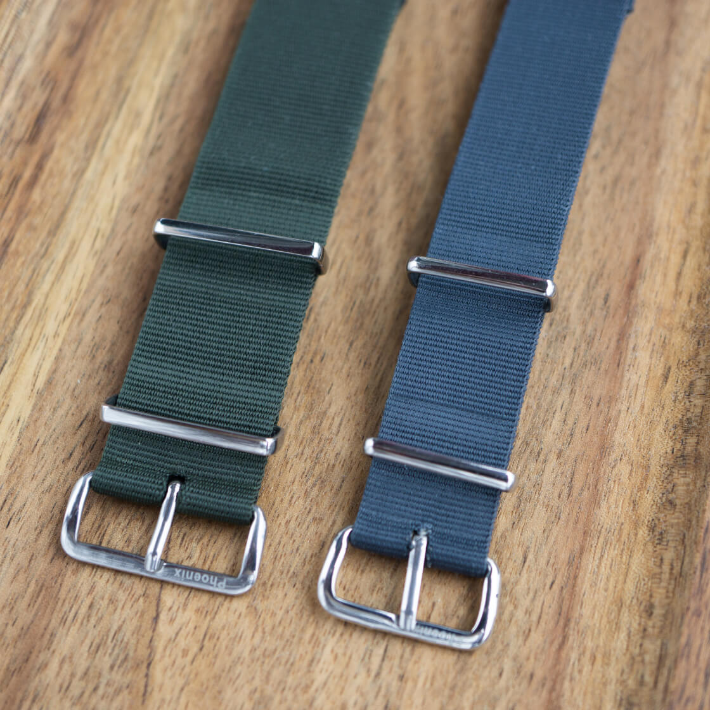
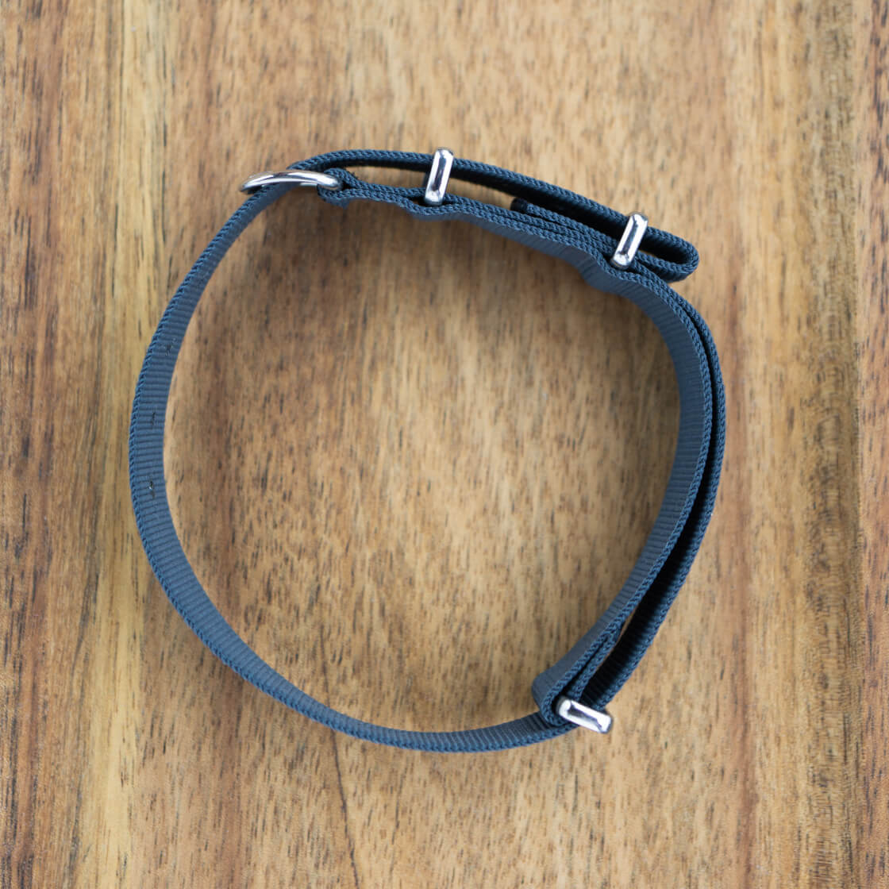
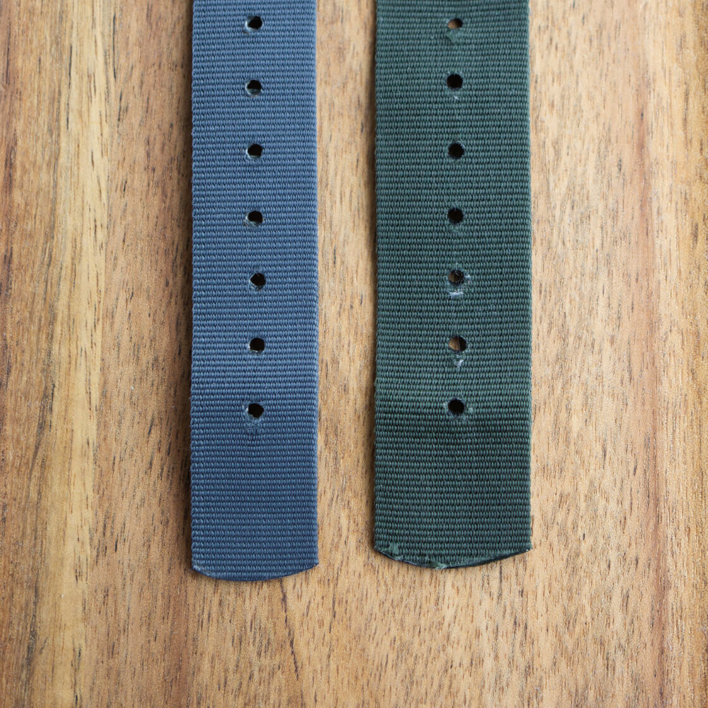
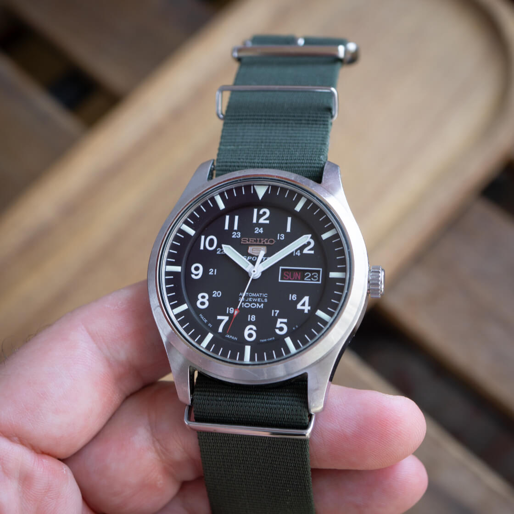
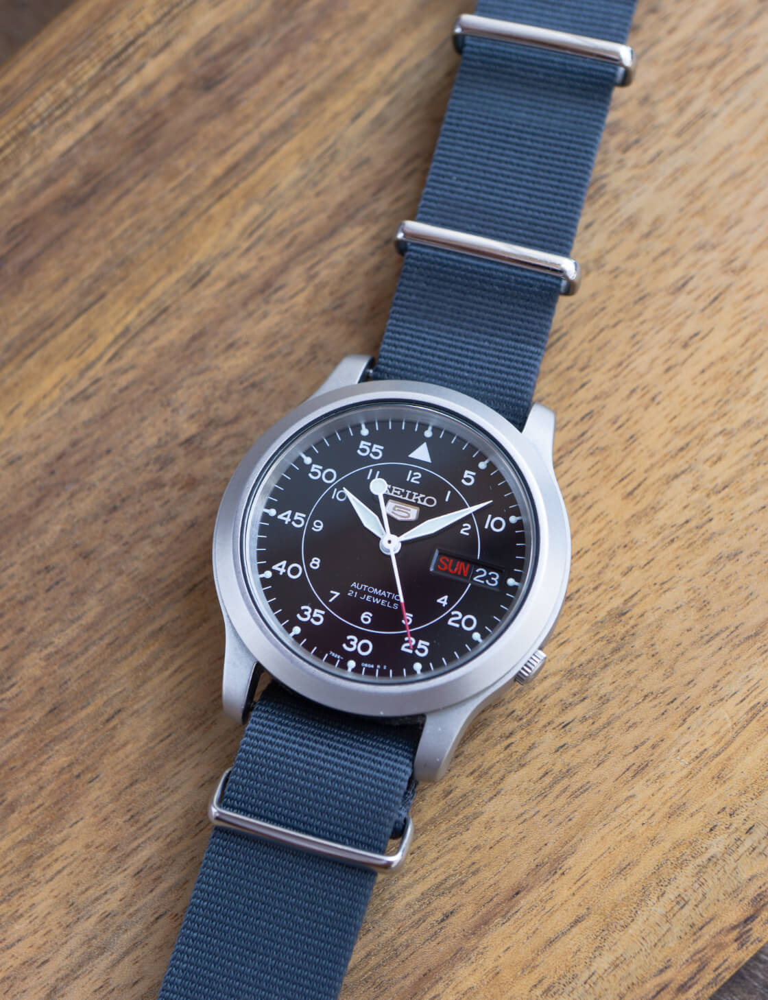
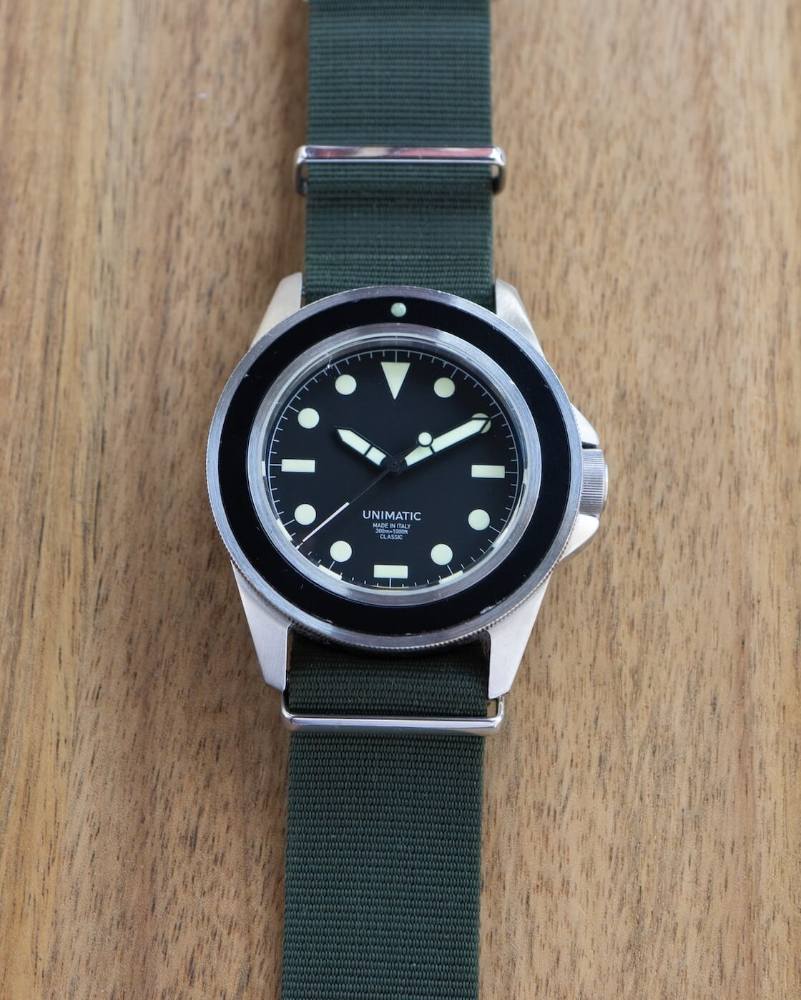

Review of the Phoenix Military Watch Strap
1978, somewhere in the UK. A deal was made. A company from Cardiff would start supplying the Ministry of Defense with nylon pass-through straps. Made to government specifications, with heat-welded hardware, in admiralty grey BS 4800 color. The company was Phoenix, and the strap is what we now call a NATO strap. And I am reviewing it today, in 2024.
 Nenad Pantelic • February 14, 2024
Nenad Pantelic • February 14, 2024

| Quality | |
| Comfort | |
| Design | |
| Durability |
The verdict: It may be on its way out, but the Phoenix is one of the best nylon pass-through straps out there.
What we like?
- Very comfortable strap
- Thinness
- Matte colors of the nylon
- Lightweight strap
- The underkeeper piece isn't long
- Genuine military provenance
What we don't like?
- Holes stretch easily
- Edges quickly start to fray
- Scarce availability
The Full Review
I have to admit that I came late to the Phoenix straps. I always thought they were outdated, flimsy, and irrelevant in today's strap market. But every now and then I would come across a forum or a Slack thread where I'd read nothing but superlatives about them.
So in late 2023. just around the time the word start spreading they'd stop selling, I bought a few. Forget the romantic military provenance these straps have. Objectively, the Phoenix nato strap is a solid product that wears beautifully.
Let's first go through the basic specs sheet:
Technical details
| Brand | Phoenix |
| Width | 18mm & 22mm (reviewed sizes) |
| Tapering | None |
| Length | 280mm |
| Material | Nylon blend |
| Buckle | Stainless steel; Polished |
| Keepers | Stainless steel; Heat sealed |
| Edges & cut lines | Heat treated |
| Strap finishing | Matte |
Phoenix strap is available in as many as seven colors. All the colors are matte and subdued, which is a big plus. There are three solid options (admiralty grey, black, and green), and four regimental or striped variants including the Bond.
As for the size, it is offered in 18mm, 20mm, and 22mm options.
The hardware is polished only, and the buckle is signed with the etched name "Phoenix". Some stores also offer a PVD black-on-black variant, but finding that strap is not easy.
Phoenix the Company
Phoenix straps was founded in 1939, and the business is based in Cardiff, UK. You read that right... 1939. They have a full manufacturing facilities and staff, and for years they have been producing specialized nylon watch straps.
The big breakthrough company had in 1978, when it took over production of MoD-spec G10 straps.
I am no expert on the British military and horological history, so I would share two resources where you can find tons of interesting details.
- The first is an article from the CWC Addict called "An Addiction to Old NATO Straps".
- Second one is the video by Greg Petronzi, aka @true_patina, called "NATO Style Straps: Vintage vs Contemporary".
Unfortunately, somewhere near the end of 2023. the word has spread on the enthusiast communities that the company is going to be closing in the near future, as the owner (Mike) has decided to wind down and retire.
Design and Materials
This strap uses a proven standard nato construction that we're used to seeing for decades. Forget about heavy-duty metal hardware, modern nylon blends, funky patterns, and reinforced holes. Here we have a simple folded wire buckle, thin heat sealed metal loops, and naked edges and cut lines.
This is a good, proven build.
The second piece of nylon (the underkeeper piece) is shorter when we compare Phoenix to other strap manufactures. And this is a huge plus. Somehow, having a short underkeeper piece of nylon makes the strap wear more comfortable.
Speaking of nylon, the material is pliable, soft, and very comfortable. Instead of instantly returning to its previous shape, the material keeps the memory of the bent shape when you squash and bend it. Waive is tight, and the material is very thin, just above 1mm in size.
As mentioned before, holes are not reinforced. They tend to stretch easily, so keep that in mind. Also the distance between the holes is larger than usual. If you are constantly between the holes, and cannot get the perfect fit, then you might have problem fine tuning wearability of this strap.


Comfort and Durability
I really do not know what kind of magic is behind this strap, but it wears amazing. It is super comfortable.
The strap is lightweight, and combined with the thin material the result is enjoyable wearing experience.
Material memory helps a lot. The material quickly conforms to the shape of your wrist and keeps the watch in one place.
Something that I rarely experience with pass-through straps happened with Phonenix: no break-in time was required. Fantastic!
I don't have the urge to cut the underkeeper piece, which is something I almost always do with other nato straps. Phoenix is comfy just the way it is.
When it comes to durability, I do not have many issues with the Phoenix. I will update the timeline below, as I use the strap more.
Reading other people's experiences I read that the holes will stretch drastically. Some people experienced tears and more pronounced damages. Honestly, one month of my occasional use is too little time to get that kind of issues.


Initial Usage The strap was comfortable during the first few wears. It is easy to achieve a good fit. I can easily fold back and tuck in the excess part. Overall, an excellent wearing experience.
One months of use One of the holes is stretched by one millimeter, but it's nothing to complain about. The strap still holds up well and is very comfortable
Compatibility and Pairing Recommendation
I wish I could put it on the Milsub 5517. Or at least on a vintage CWC SBS diver. Since, that wont happen anytime soon, I am happy to strap it on various sports, field and divers watches that I own.
This strap works even with vintage pieces. It does not attract too much attention to itself, and its matte colors can compliment many vintage watch designs.
The only watches with which this nato might have issues are top-heavy, large divers, or pilot watches. The material is thin and might not be able to support the overall weight of a watch. Watches like the Rolex SeaDweller, the OG Pelagos 42mm, and the Seiko Marinemaster would benefit from a strap with stronger webbing.
In this section, I am showcasing the versatility of this strap when paired with various watches from my personal collection.



Final Thoughts
"A lot of praise for a strap with a score of 80/100" you might say. Well this is the prime example where a saying "The whole is greater that the sum of its parts" can apply.
As I wear the strap now when I am writing the closing words of the review, several key elements stand out. Firstly, its construction: length, thickness of material, and the unobtrusiveness of metal hardware. Such a simple, yet effective construction. Further, the strap is so lightweight and easy to wear. And finally it is very comfortable.
For sure, modern straps went far and beyond into improving all aspects of the original G10 design, and brands have introduced hi-tech fabric blends, fancy metal hardware and adjustment systems, but sometimes I simply want to grab a tried and tested strap that I know will work. And for several decades, the Phoenix military pass-through strap was precisely that. THE product that wrote the history of the last 40 years of the pass-through straps. Happy retirement.